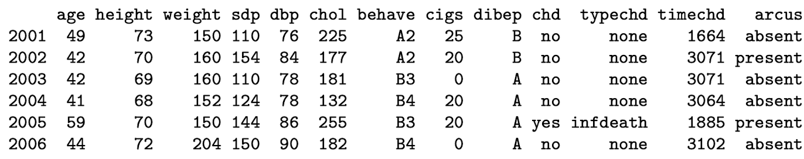
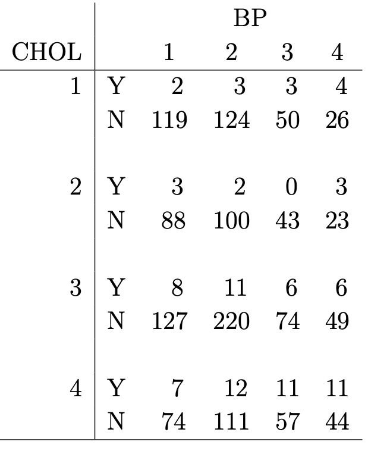

2.2 Interpretation & Hypothesis & CI#
Odds Ratio Interpretation#
CHD example#
Variables that might be related to the chance of developing this disease?
{kind=link}
Fitting Model:
Odds Ratio Model?
$$ \frac{p}{1-p} = e^{-4.502 + 0.025 × height + 0.023 × cigs } $$
$$ = e^{4.502} · e^{0.025·height} · e^{0.023·cigs } $$
$$ =0.011 × 1.026 height × 1.023 cigs $$
Interpretation?
The estimated odds ratio of heart disease for a man against another man 1 inch shorter is 1.026. The estimated odds of chd increase by 2.3% with each additional cigarette smoked per day.
Hypothesis Testing#
Test significance of predictors#
LR test, Wald test, Score test can be applied to test:
H0 : C β = ξ vs. H1 : C β = ξ
H0: β has no effect (i.e. predictor not significant)
H1: β has effect (i.e. predictor is significant)
Likelihood ratio test 🌟 (Mostly Used)#
Test statistic
where $\widetilde{\beta}$ is MLE under H0, and $\hat{(\beta)}$ is MLE under H1
for $\Delta D$, H0 with dof $ s = dim(β_{Ω-ω})$
Wald test#
Test statistic $$W = \frac{(\hat{\beta} - \beta_0)^2}{\mathrm{Var}(\hat{\beta})}$$
Score test#
Test statistic $$S = \frac{\partial \ell(\boldsymbol{\theta})/\partial \beta}{\sqrt{\mathrm{Var}(\partial \ell(\boldsymbol{\theta})/\partial \beta)}} \Bigg\rvert_{\beta = \hat{\beta}}$$
LR test Continued#
The log-likelihood function can be seen at log-like
Deviance vs Residual Deviance
In other examples of GLMs, the deviance is a measure of how well the model fit the data. But in the case where the response is binary, the deviance cannot be used for measuring goodness of fit, because the deviance is just a function of pi ’s
However, Residual deviance is can be used for measuring goodness of fit. It is the difference between 2 deviance which represents the deviance that adding one predictor reduces.
Chi-square Test & Residual Deviance#
CHD example 2 (from prac)
The following data were obtained from a study of coronary heart disease, where N is the total number of subjects in each group and Y is the number diagnosed with coronary heart disease. The factor CHOL refers to serum cholesterol in mg/100cc where: 1=<200, 2=200−219, 3=220−259, 4=260+ while the factor BP refers to blood pressure in mm of mercury where: 1=<127, 2=127−146, 3=147−166, 4=167+
{kind=link}
It is important for us to transform this data into the form that R recognises:
Y |
N |
BP |
CHOL |
|---|---|---|---|
2 |
119 |
1 |
1 |
3 |
124 |
2 |
1 |
3 |
50 |
3 |
1 |
4 |
26 |
4 |
1 |
3 |
88 |
1 |
2 |
2 |
100 |
2 |
2 |
0 |
43 |
3 |
2 |
3 |
23 |
4 |
2 |
8 |
127 |
1 |
3 |
11 |
220 |
2 |
3 |
6 |
74 |
3 |
3 |
6 |
49 |
4 |
3 |
7 |
74 |
1 |
4 |
12 |
111 |
2 |
4 |
11 |
57 |
3 |
4 |
11 |
44 |
4 |
4 |
Y <- c(2, 3, 3, 4, 3, 2, 0, 3, 8, 11, 6, 6, 7, 12, 11, 11)
N <- c(119, 124, 50, 26, 88, 100, 43, 23, 127, 220, 74, 49, 74, 111, 57, 44)
BP <- factor(rep(1:4, 4))
CHOL <- factor(rep(1:4, rep(4, 4)))
fit.1 <- glm(Y/N ~ 1, weights = N, family = "binomial")
fit.2 <- glm(Y/N ~ CHOL, weights = N, family = "binomial")
fit.4 <- glm(Y/N ~ CHOL + BP, weights = N, family = "binomial")
summary(fit.2)
Call:
glm(formula = Y/N ~ CHOL, family = "binomial", weights = N)
Deviance Residuals:
Min 1Q Median 3Q Max
-1.659 -1.020 0.001 1.127 2.367
Coefficients:
Estimate Std. Error z value Pr(>|z|)
(Intercept) -3.2419 0.2943 -11.017 < 2e-16 ***
CHOL2 -0.1839 0.4644 -0.396 0.6920
CHOL3 0.5914 0.3480 1.699 0.0893 .
CHOL4 1.4543 0.3392 4.287 1.81e-05 ***
---
Signif. codes: 0 ‘***’ 0.001 ‘**’ 0.01 ‘*’ 0.05 ‘.’ 0.1 ‘ ’ 1
(Dispersion parameter for binomial family taken to be 1)
Null deviance: 58.726 on 15 degrees of freedom
Residual deviance: 26.805 on 12 degrees of freedom
AIC: 85.909
# model4 CHD ~ CHOL + BP
Analysis of Deviance Table
Model: binomial, link: logit
Response: Y/N
Terms added sequentially (first to last)
Df Deviance Resid. Df Resid. Dev
NULL 15 58.726
CHOL 3 31.921 12 26.805
BP 3 18.729 9 8.076
given that 1-pchisq(8.076, 9) = 0.5265058
What can we interpret from Resid. Dev?
model4 CHD ~ CHOL + BP. Small Resid.Dev <=> big p-value <=> model adequate <=> no significant association between CHOL & BP.
How to interpret the table?
ChatGPT-based Answer
This is an analysis of deviance table for a binomial logistic regression model. Here's what the columns mean:
Df: This stands for degrees of freedom. It refers to the number of independent pieces of information that go into the estimate of a parameter or parameters. In this case, it's the number of parameters for each term in your model.
Deviance: This is the contribution to the overall model deviance by the variable(s) added at each step. It's essentially a measure of how much the likelihood improves when the variables are added to the model.
Resid. Df (Residual Degrees of Freedom): This is the number of degrees of freedom left over after accounting for the variables in the model. It's the total number of observations minus the number of parameters estimated.
Resid. Dev (Residual Deviance): This is the remaining unexplained deviance after accounting for the variables in the model. Lower values indicate a better fit.
Here's how to interpret the table:
The first row (NULL) shows the deviance for the null model, which includes only the intercept and no predictors. Here, the Resid. Df is 15, and the Resid. Dev is 58.726.
The second row (CHOL) shows what happens when you add the predictor "CHOL" to the model. The deviance decreases by 31.921, the Resid. Df decreases to 12, and the Resid. Dev decreases to 26.805.
The third row (BP) shows what happens when you add the predictor "BP" to the model already containing "CHOL". The deviance decreases by 18.729, the Resid. Df decreases to 9, and the Resid. Dev decreases to 8.076.
The fact that the deviance is decreasing as you add predictors indicates that these predictors are improving the fit of the model, which is a good thing. The goal in a GLM is to explain as much deviance as possible with your predictors.
How is each term calculated?
ChatGPT
In a binomial logistic regression, deviance is calculated based on the likelihood of the model, and each value in the analysis of deviance table is computed in a certain way.
The deviance for a given model is calculated as:
`Deviance = -2 * log(Likelihood of the model)`
Where "Likelihood of the model" is the likelihood of observing the data given the parameters of the model.
The deviance for the "NULL" model (a model with no predictors) is calculated first, and the residual deviance for this model is equal to the deviance because no predictors have been added yet.
When predictors are added to the model (like "CHOL" and "BP" in your example), the deviance for the new model is calculated. The change in deviance, or the deviance contributed by the predictor, is the deviance of the null model minus the deviance of the new model:
`Deviance contributed by predictor = Deviance(NULL model) - Deviance(new model)`
The residual deviance after adding the predictor is simply the deviance of the new model:
`Residual Deviance = Deviance(new model)`
The residual degrees of freedom (Resid. Df) is the number of observations minus the number of parameters estimated in the new model. If there were originally n observations and you've added k predictors (including the intercept), then:
`Resid. Df = n - k`
These calculations are performed sequentially for each predictor added to the model. Each time, the new model includes all the predictors added so far, the deviance contributed by the new predictor is calculated as the difference in deviance between the new model and the previous model, and the residual deviance is updated to the deviance of the new model.
What if the Resid. Dev is big?
Model inadequate <=> there is a significant association between CHOL & BP.
Warning
What is the reason for not using deviance as a measure of fit for binary response generalised linear models (GLMs)?
Because the exact probability distribution of the deviance in this case is very difficult to find and is poorly approximated by a chi-square distribution.
Additionally, the R output do not contain Residual Deviance of Full Model. (only null model). So no results can be drawn. IF we have the residual deviance of full model. We can test the adequacy of a certain model by comparing its deviance with residual deviance of full model.
Important
Difference between Deviance Residual and Residual Deviance?
Deviance Residual: How many deviance can the added variable explain (same as Change in Deviance) [31.921] (bigger, better)
Residual Deviance: How many deviance still uninterpreted (after adding that variable. ) [26.805] (smaller, better)
Test Significance of Predictor (Coding)#
# model2 CHD ~ CHOL
Analysis of Deviance Table
Model: binomial, link: logit
Response: Y/N
Terms added sequentially (first to last)
Df Deviance Resid. Df Resid. Dev
NULL 15 58.726
CHOL 3 31.921 12 26.805
What does Resid. Dev mean?
deviance(fit.1) = 58.72622 (deviance of the null model)
deviance(fit.2) = 26.80498 (residual deviance of the current model & full model)
Tip
H0: There is no significant relationship between the predictors and the response
Hence p < 0.05: reject H0. Conclude: predictors significant
Hence p > 0.05: can’t reject H0. Conclude: predictors NOT significant
1-pchisq(58.726-26.805, 3) #5.437987e-07
Are the predictors significant?
YES
Reasoning?
p-value = 5.437987e-07 < 0.05, reject H0: not significant. Conclude: predictor significant.
Test Model Adequacy (Code)#
:label: TMA
1 Model#
Is model 2 adequate?
Tip
H0: The model provides a goodfit (model IS adequate)
Hence p < 0.05: reject H0. Conclude: model is NOT adequate
Hence p > 0.05: can’t reject H0. Conclude: model IS adequate
1-pchisq(26.805, 12) #0.008242301
Is the model adequate?
NO
Reasoning?
p-value = 0.008242301 < 0.05, reject H0: model is adequate. Conclude: model is not adequate.
2 Models#
Which model is a better choice mod2 or mod4?
Warning
ANOVA can only be used when models are nested.
anova(fit.2, fit.4, test = "Chi")
Analysis of Deviance Table
Model 1: Y/N ~ CHOL
Model 2: Y/N ~ CHOL + BP
Resid. Df Resid. Dev Df Deviance Pr(>Chi)
1 12 26.8050
2 9 8.0762 3 18.729 0.0003111 ***
---
Signif. codes: 0 ‘***’ 0.001 ‘**’ 0.01 ‘*’ 0.05 ‘.’ 0.1 ‘ ’ 1
0.0003111 = 1-pchisq(26.8050 - 8.0762, 12 - 9)
H0?
H0: smaller model is fits the data better
Which model is better?
0.0003111 < 0.05, reject H0: smaller model better. Conclude: bigger model better (i.e. mod4 fits the data better)
Confidence Interval#
Confidence Interval for $\beta$#
Reminder of our fomualr (6):
where p is the probability of getting coronary heart disease
Since 0.025 is only an estimated value, we want to find the confidence interval to indicate this.
Coefficients:
Estimate Std. Error z value Pr(>|z|)
(Intercept) -4.5016140 1.8418627 -2.4441 0.01452
height 0.0252078 0.0263274 0.9575 0.33833
cigs 10.0231274 0.0040402 5.7243 1.038e-08
As we can see from the coef table, the Std. Error represents standard error which we usually use to present CI. Additionally, $z-value = \frac{est.}{std.}$. z value follows approx normal distribution, but we don’t really use it.
95% CI of $\beta_1$ (height) ?
0.0252078 ± 1.96 · 0.0263274 = ( 0.0263939, 0.0768095).
Tip
The CI does not include zero => $\beta \neq 0$ and hence that there is significant association between the predictor and response
Confidence Interval with Covariance#
$\eta$ in line